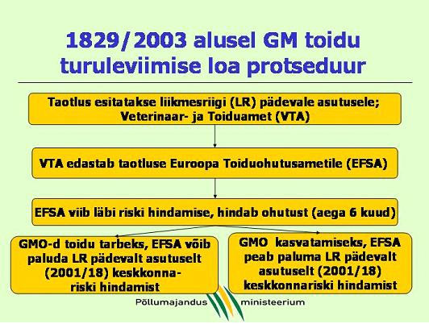
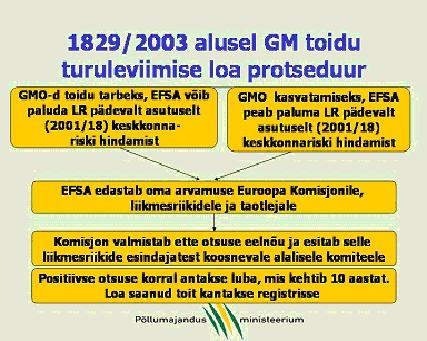

Euroopa Parlamendi ja Nõukogu määrus 1829/2003 geneetiliselt muundatud toidu ja sööda kohta käsitleb GM toidu või sööda turustamisele seatud erinõudeid.
Määrus katab järgmised valdkonnad:
Määrus ei käsitle GMOde abil toodetud toitu ning GM söödaga toidetud ja GM ravimitega ravitud loomadelt saadud tooteid.
Määruse põhimõte on, et ühtegi nimetatud gruppi kuuluvat toodet ei tohi Euroopa Ühenduse turule tuua enne, kui selle ohutus on hinnanud Euroopa Toiduohutusamet (European Food Safety Authority – EFSA) ning toote turule viimiseks on tehtud vastav lubav otsus. GM toidu ja sööda turule toomise loa jaoks on lisaks EFSA pooldavale hinnangule vaja ka Euroopa Liidu liikmesriikide heakskiitu. Euroopa Komisjoni otsus on kõikidele liikmesriikidele siduv.

Joonised: GM toidu turuleviimise loa protseduur (Allikas: Põllumajandusministeerium)